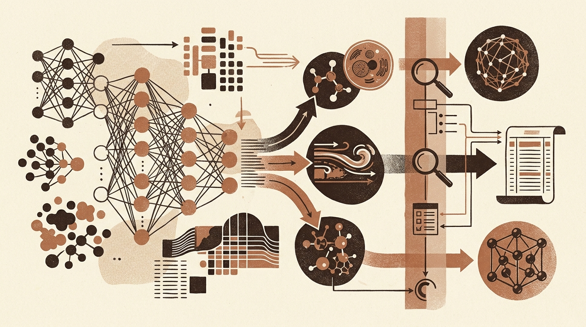

Advances in Foundation Models, Domain Adaptation, and Model Auditability
Recent machine learning research highlights targeted architectural and evaluation adaptations across domain-specific applications, including medicine, fluid dynamics, and materials science. Studies introduce specialized methodologies such as SMILESGNN for drug toxicity prediction, SpaFactor for histology-to-transcriptomics inference, and TAM-Chain for thyroid cytology classification. In physical and engineering fields, researchers demonstrate latent-space variational autoencoder (VAE) adaptations to correct computational fluid dynamics (CFD) flow simulations, non-leaking region-held-out evaluation splits for scanning electron microscopy of stainless steel, and smart-meter analytics to track residential solar and electric vehicle co-adoption.
A major theme across these developments is the rigorous evaluation, interpretability, and auditing of model outputs. Investigations reveal visual rendering failures in post-hoc explanation tools like SHAP and LIME when applied to right-to-left languages (e.g., Arabic, Hebrew, Urdu), despite the underlying attributions remaining mathematically sound. In educational technology, work focuses on establishing unified validation protocols for explanation stability and faithfulness in knowledge tracing, while reinforcement learning research defines explicit testable properties for auditing and composing neural checkpoints into discrete behavioral rules.
Finally, methodological refinements in generative and time-series foundation models address practical operational constraints. In diffusion modeling, condition-aware representation regularization leverages input labels or text to guide training efficiency and sample quality. For time-series foundation models, new approaches tackle real-world forecasting challenges by directly incorporating historical data revisions to avoid lookahead bias and by quantifying multi-step forecast uncertainty over extended horizons.
Summary of Papers
- Stable and Faithful Explanations for Knowledge Tracing: Introduces a validation protocol evaluating predictive competitiveness, explanation stability, and retraining faithfulness for knowledge tracing models using engineered pedagogical features.
- SMILESGNN: Interpretable Clinical Toxicity Prediction via SMILES-Graph Cross-Attention Fusion: Combines SMILES transformers and graph neural networks via cross-attention fusion to deliver interpretable drug toxicity predictions under class imbalance and scaffold shifts.
- CFD Correction of Open Tip Clearance Flow in a Compressor Cascade Using VAE Latent Space Adaptation: Proposes a non-intrusive VAE latent-space adaptation method to correct computational fluid dynamics predictions of compressor cascade flow against sparse experimental data.
- CARE: Condition-Aware Representation Regularization for Diffusion Models: Introduces representation regularization that explicitly incorporates built-in conditioning signals, such as labels or text, to enhance diffusion model training efficiency and sample quality.
- SpaFactor: Lightweight Spatial Context-Aware Gene Program Modeling for Histology-to-Transcriptomics Inference: Predicts spatial gene expression from hematoxylin and eosin tissue images by modeling spatial context-aware gene programs rather than fitting individual high-dimensional gene targets.
- When Explanations Cannot Be Read: Measuring and Correcting SHAP and LIME Rendering for Right-to-Left Languages: Identifies visual rendering failures in SHAP and LIME feature attribution plots when applied to right-to-left text and evaluates corrective rendering solutions.
- Leakage-Safe Machine Learning for Hydrogen Embrittlement Detection in 316L Stainless Steel: A Region-Held-Out Evaluation of Texture and Deep Features in SEM Micrographs: Evaluates hydrogen embrittlement in stainless steel SEM micrographs using region-held-out splits to prevent data leakage caused by overlapping image frames from the same specimen area.
- Time-Series Foundation Models That Understand Data Revisions: Presents VINTAGE-TS, an adaptation mechanism for time-series foundation models that accounts for historical data revisions made by statistical agencies to avoid lookahead bias.
- Uncovering Residential PV-EV Co-Adoption from Smart-Meter Data: Load Archetypes and Detection for Demand-Side Planning: Analyzes smart-meter electricity data to extract load archetypes and detect joint residential photovoltaic and electric vehicle adoption for demand-side grid planning.
- Auditability Is Not One Property: Rule Overlap, Behavioural Agreement, and Composition in Reinforcement Learning: Defines six testable criteria for evaluating whether reinforcement learning policy checkpoints can be audited and composed using discrete behavioral rules.
- SGA: Uncertainty Quantification for Multi-Step Forecasting in Time Series Foundation Models: Provides an uncertainty quantification method to manage branching forecast variations across extended horizons in time-series foundation models.
- TAM-Chain: Multi-Scale Thyroid Cytology Classification via Absorbing Markov Chains and Shannon Entropy Uncertainty Quantification for False-Negative Suppression and Domain-Shift Adaptation: Combines absorbing Markov chains and Shannon entropy uncertainty quantification to reduce false negatives and manage clinical domain shifts in thyroid cytology classification.
Original feed: arXiv cs.LG